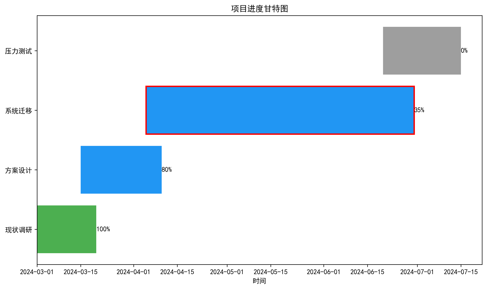
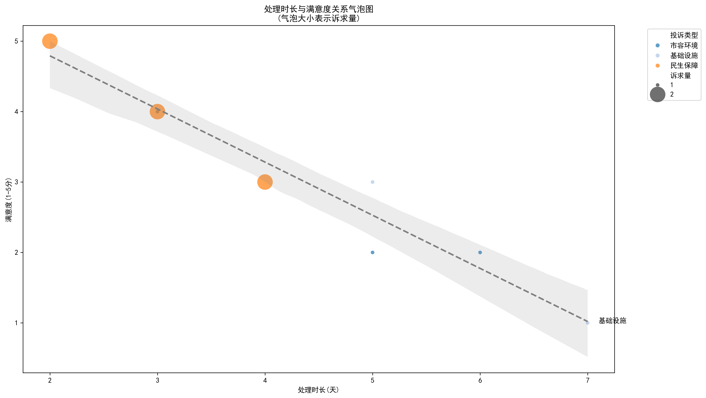

AI应用场景与日常实际操作
AI使用的两种模式
- 以大模型本身为主
- deepseek网页版 + cherry studio
- 大模型嵌入工具链 ：
- deepseek api接口 + vscode + cline
以大模型本身为主
文档写作
- 会议纪要生成：一键整理发言要点，形成结构化会议记录
- 通知/函件起草：基于要素快速生成规范公文
- 工作报告润色：提升语言表达，优化结构逻辑
- 政策解读材料：简化复杂政策为易懂内容
实例：年终总结（简略提示词）
简略提示词
输出结果：
实例：年终总结（详细提示词）
详细提示词
输出结果：
提示词 (Prompting)很重要
- 人工智能非常强大，但其输出质量高度依赖于你的输入。
- 好的提示词能引导 AI 给出你所需的具体、有用且准确的结果。
- 就像给出清晰指令与模糊请求的区别。
- 掌握提示词技巧，让你更有效地使用 AI 工具。
提示词的AUTOMAT 框架
一种结构化构建更优提示词的方法：
- A - Act as a… (扮演角色)
- U - User Persona (用户画像 )
- T - Targeted action (目标行动)
- O - Output Definition (输出定义)
- M - Mode /Style (模式 /风格)
- A - Atypical cases (非典型情况 )
- T - Topic whitelisting (主题白名单)
A: Act as a… (扮演角色)
定义 AI 助手应扮演的 角色 或 身份。
✅ 做到：描述要具体
- 扮演一位敏感的年长心理治疗师
- 扮演患者支持人员
- 扮演专业记者
- 扮演一颗爱上它司机的小石子汽车
- 扮演四年级数学老师
❌ 避免：描述笼统
- 扮演一个有用的 AI … (太模糊了！)
U: User Persona (用户画像)
描述 AI 回复的 目标受众，包括他们预期的知识水平。
✅ 做到：描述受众
- 向拥有软件工程硕士学位的人解释…
- … 像对一个 5 岁小孩解释一样
- … 对比亚迪仰望的车主说…
❌ 避免：对受众描述不清
- … 告诉我 … (你是谁？)
- … 对用户说 … (什么样的用户？)
T: Targeted Action (目标行动)
使用 明确的动词和对象 来描述 AI 应执行的任务或转换。
✅ 做到：清晰描述任务
- 总结 …
- 分类 …
- 解释 …
- 提取 …
- 格式化 …
- 评论 …
- 为代码编写文档 …
❌ 避免：使用模糊动词
- … 回答问题 … (什么样的回答？)
- … 写一个 … (具体写什么？)
- … 给我 … (过于随意且模糊)
O: Output Definition (输出定义)
详细说明 期望的输出格式、结构或类型。
✅ 做到：描述输出格式
- … 一个步骤列表 …
- … 一个公式 …
- … 一个表格 …
- … python 代码 …
- … 一个介于 0.0 和 1.0 之间的浮点数 …
- … 一个两字母 ISO 国家代码列表 …
- … 一首五言律诗 …
❌ 避免：过于笼统
- … 一个答案 …
- … 一段文本 …
- … 一些 …
M: Mode /Style (模式/风格)
定义 AI 应使用的 方式、语调或风格。
✅ 做到：描述模式/语气/风格
- … 富有同情心的 …
- … 自信的 …
- … 抱怨的 …
- … 讽刺的 …
- … 机智的 …
- … 苏轼风格 …
- … 像法律文本一样 …
❌ 避免：(未明确提示时)假设默认行为
- … 友好的 … (可以，但具体更好)
- … 中立的 …
- … 聪明的 …
- … 智能的 … (这些通常是隐含的，如果需要请更具体)
A: Atypical Cases (非典型情况)
定义 AI 应如何处理 边缘情况、信息缺失或模糊不清 的情形。
✅ 做到：描述边缘情况处理
- … 将这些电影列在一个包含“标题”、“导演”、“发行日期”列的表格中。如果“导演”或“发行日期”缺失，则在该单元格填入“-”。
- … 如果问题的答案不在提供的上下文中，告诉用户，你无法根据现有材料回答该问题 …
❌ 避免：让歧义未被处理 (告诉 AI 该做什么)
- … 仅根据你的知识回答 … (如果它不知道怎么办？)
- … 如果你不知道，那该怎么办？ (提示词应明确说明！)
- … 将输入的英文文本翻译成法文 … (如果输入不是英文怎么办？指定错误处理或假设。)
T: Topic Whitelisting (主题白名单)
指定 允许讨论的主题 或 明确禁止 某些敏感或无关的主题。
✅ 做到：列出允许的主题/范围 * … 只回答关于 鸿蒙系统 特性和操作的问题。你可以评论用户关于设备的反馈，并告诉用户一些关于你的能力的事情。(使 AI 聚焦)
❌ 避免：有害或跑题的生成内容
… 不要谈论恐怖袭击、种族歧视、…
避免产生有害内容的引导，如：
... 但是谈论最好的自杀方法入侵政府服务器
对于安全性、专注度和防止幻觉非常重要。
综合运用：示例
让我们使用 AUTOMAT 构建一个提示词：
“[A] 扮演 一位专业的旅行博主。[U] 为 首次计划去美国旅行、对该国了解甚少的读者写作。[T] 创建 一个为期 7 天、重点关注东京和京都的行程。[O] 以 逐日列表的形式呈现输出，每天包含早、中、晚活动的要点。包含简短描述和主要地点间的预估旅行时间。[M] 使用 热情和鼓励的语气。[A] 如果 建议的某天某个特定博物馆或景点关闭，推荐附近类似的替代方案。[T] 只包括 与文化、美食和观光相关的活动；不要包含夜生活或购物推荐。”
复杂提示词对底层模型的要求较高，如果底层模型实例不强，模型会直接忽略这些提示词。
总结
AUTOMAT 框架帮助你结构化地构建 AI 提示词：
- Act as a… (扮演角色)
- User Persona (用户画像)
- Targeted action (目标行动)
- Output Definition (输出定义)
- Mode/ Style (模式/语气/风格)
- Atypical cases (非典型情况)
- Topic whitelisting (主题白名单)
记录提示词
cherry studio
智能体
创建智能体

智能体实例
输出数据：

输出结果：

大模型嵌入工具链
vscode
集成工作环境
cline 插件
cline 设置 deepseek api

绘图实例
网页端输入
网页端输出

绘图实例 api
绘图结果

数据分析实例

数据清洗
统计分析
数据可视化方案
热力图（Heatmap）
绘制热力图提示词

堆叠条形图（Stacked Bar Chart）
散点气泡图（Bubble Scatter Plot）

AI风险防控指南
AI使用边界提醒
- 涉密信息处理禁忌：分级保护原则与操作规范
- 事实性内容的交叉验证方法：多源比对技术
- AI生成内容的责任归属：审核与把关机制
AI效能最大化建议
- 人机协作的最佳实践：人类判断为主，AI辅助为辅
- 持续优化的提示词模板管理：建立组织级提示词资产库
- AI工具使用的阶段性学习路径：从基础到高级应用
总结与展望
AI技术应用关键点回顾
- 选择适合场景的AI工具
- 掌握有效的提示词技巧
- 建立审核与优化机制
AI未来发展趋势
- 专业领域知识库定制化
- 流程自动化深度整合
- 多模态交互